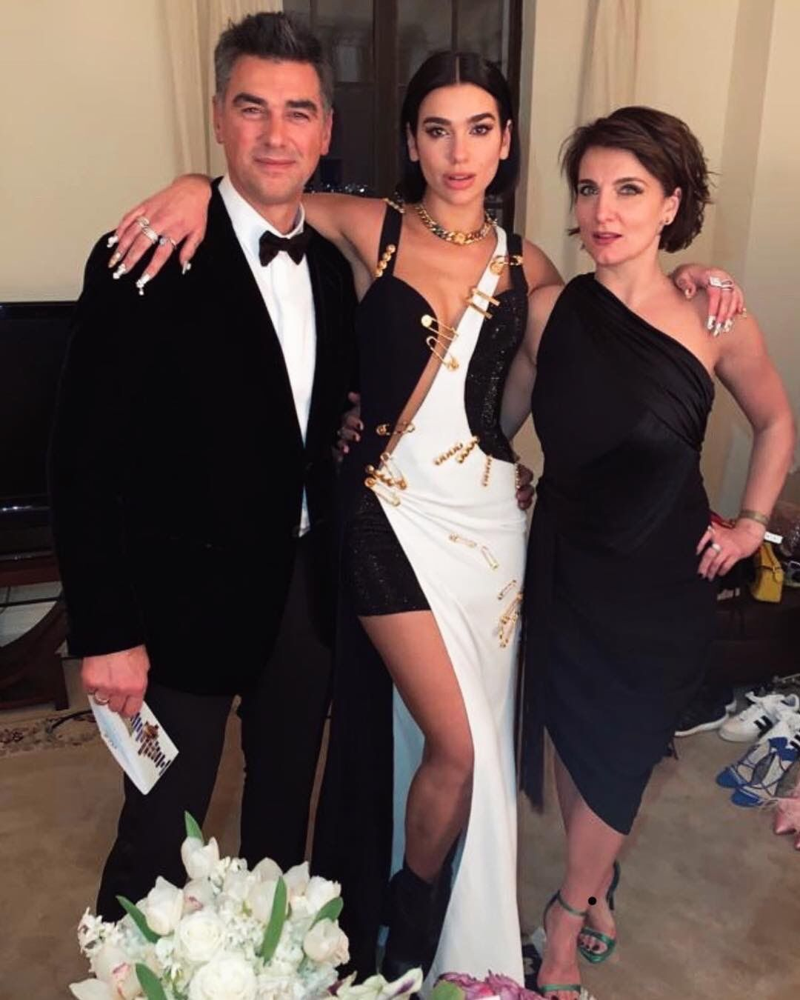

Dua Lipa es una cantante y compositora de pop inglesa, considerada como una de las nuevas artistas más exitosas de la música. Comenzó a ganar reconocimiento en 2017 con el lanzamiento de su álbum epónimo, por el que ganó premios como el BRIT Award. Con tan solo dos álbumes en su repertorio, Dua Lipa ha recibido otras acoladas como dos premios Grammy y dos MTV Europe Music Awards. Dua Lipa debutó en la música con el álbum epónimo Dua Lipa en 2017, con sencillos como New Rules, Be the One y IDGAF alcanzando los primeros lugares de las listas de Estados Unidos a pocos días de su lanzamiento. Ese mismo año se lanzaron sencillos como Scared to be Lonely, Blow Your Mind (Mwah), Last Dance y Hotter than Hell. En 2018 lanzó un sencillo en colaboración con el DJ Calvin Harris, One Kiss, el cual se convirtió en la canción con más tiempo en el número uno para una mujer. En 2019, su canción junto a Silk City, Electricity, le dio el premio Grammy a mejor canción de Dance, ese mismo año ganó el premio a Mejor nueva artista.
Los padres de Dua lipa, un matrimonio albano-kosovar, Dukagjin Lipa y Anesa residen en Yugoslavia se ven en la necesidad de irse como refugiados a Londres por la guerra de Bosnia
Sus padres encuentran mayores oportunidades, por parte de su padre trabajar como promotor de festivales musicales, además estudio Marketing y su madre estudio turismo.
Nacimiento Dua Lipa
(23 de abril).
Dua Lipa crece en un ambiente muy musical, su interés crece tanto que empieza a aprender violonchelo (Su estatura y peso no le permitía manejarlo bien)
Rina su hermana nace
(14 de Mayo)
Dua Lipa quiere entrar al coro sin embargo no la aceptan por no alcanzar las notas musicales a su corta edad
Su hermano Gjin Lipa nace (30 de diciembre)
Dua Lipa a sus once años y toda su familia vuelven a Pristina, la capital de Kosovo debido a que se ganó la independencia
Dua Lipa se cría en Kosovo, esto hace hace desarrollar más su propia personalidad, descubrir nuevos estilos musicales, crecer su amor por sus raíces y darse cuenta de cuál era su sueño
Dua Lipa en busca de ser una cantante mundialmente conocida a los 15 años encuentra la oportunidad de volver a Londres con una amiga muy cercana que iba a realizar un posgrado.
Dua Lipa en busca de ser una cantante mundialmente conocida a los 15 años encuentra la oportunidad de volver a Londres con una amiga muy cercana que iba a realizar un posgrado.Dua Lipa termina la secundaria en Colegio Parliament Hill a su vez realiza covers de distintas canciones, al finalizar su colegio, estudia en la escuela de teatro de Sylvia Young y obtiene trabajos como camarera, también es anfitriona en un club nocturno
Su debut aparece al componer una canción inspirada en “el mago de Oz” la sube a Soundcloud se llama "lions and Tigers and bears
Participo en un anuncio The X Factor, luego Ben Manson un manager de Warner Bros firma el primer contrato con Dua Lipa, sale “Hotter tan Hell
Su primer sencillo “New Love” La cual hizo que la compararan su voz con grandes artistas como Lady gaga, también para Octubre saco uno de los sencillos que la hizo salir al extranjero “Be the one”
Su nombre fue incluido en la lista de nominado al BBC sound, nominada a MTV European Music Awars.
Lanzamiento mundial de su carrera musical:Su primera gira en Estados Unidos.Lanzamiento de canciones como: “Scared to be Lonely” colaboración con Martin Garrix Lost in your light “New rules”, una de las canciones como himno feminista de la época, y la que la hizo reconocerse a nivel mundial por el video y la letra Para esta época junta 17 canciones y las pone en un álbum Dua Lipa(2 de Junio)
Sigue siendo nominada más premios y realiza una colaboración con Calvin Harris “One Kiss” Que su inconico baile llego a tik tok “High” banda sonora de Cincuenta sombras liberadas
Publica “Swang Song” para la banda sonora “Battle Angel”, también pública el sencillo “Don´t Publica “Swang Song” para la banda sonora “Battle Angel”, también pública el sencillo “Don´t start Now” Anuncia publicar un segundo álbum mien tras se encuentra en los Billboard hot 100.
Se lanza el álbum “Future Nostalgia” (3 de abril) cuenta con El cual anuncio el “Future Nostalgia Tour” que debido a la pandemia aplazo. Saco otros sencillos como “Fever” con Angéle Si quieres conocer más sobre el álbum da click acá para conocer las letras
Canción “We´re Good” y “cold heart” con Elton John